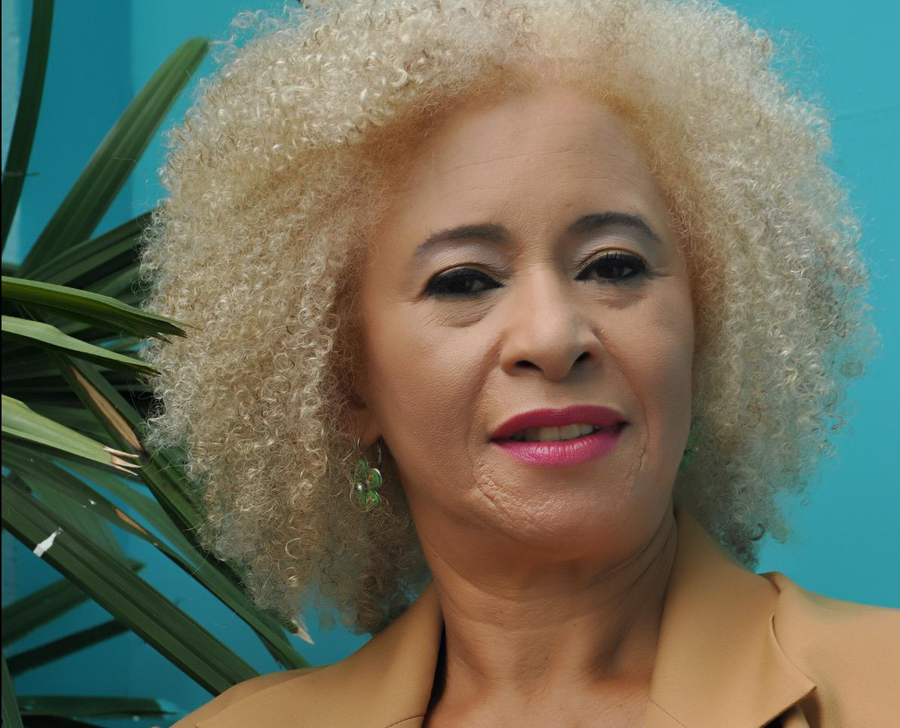

Mulheres na Tecnologia
Grace Brewster Murray Hopper

Nascida em Murray(nasceu em 9 de dezembro de 1906, faleceu 1 de janeiro de 1992) foi uma cientista da computação americana , matemática e contra- almirante da Marinha dos Estados Unidos . Uma das primeiras programadoras do computador Harvard Mark I , ela foi uma pioneira da programação de computadores que inventou um dos primeiros linkers . Hopper foi a primeira a conceber a teoria das linguagens de programação independentes de máquina, e a linguagem de programação FLOW-MATIC que ela criou usando essa teoria foi posteriormente estendida para criar COBOL , uma linguagem de programação de alto nível inicial. ainda em uso hoje.
Antes de ingressar na Marinha, Hopper obteve um Ph.D. em matemática pela Universidade de Yale e foi professor de matemática no Vassar College . Hopper tentou se alistar na Marinha durante a Segunda Guerra Mundial, mas foi rejeitada porque tinha 34 anos. Em vez disso, ela se juntou às Reservas da Marinha. Hopper começou sua carreira na computação em 1944, quando trabalhou na equipe Harvard Mark I liderada por Howard H. Aiken . Em 1949, ela se juntou à Eckert–Mauchly Computer Corporation e fez parte da equipe que desenvolveu o computador UNIVAC I. Na Eckert–Mauchly, ela gerenciou o desenvolvimento de um dos primeiros COBOLcompiladores.
Hypatia de Alexandria
Hypatia de Alexandria>>>>>Hipácia, também conhecida como Hipátia, nasceu na cidade de Alexandria, então o caldeirão cultural da região que hoje corresponde ao Egito, em cerca de 355 d.C. Ela era filha de Theon, famoso filósofo, astrônomo e mestre de matemática no Museu desta cidade; graças a sua influência ela se destacaria no cenário intelectual posterior.
Adepta da corrente neoplatônica, Hipátia cresceu em um contexto repleto de vida cultural e filosófica; ela mantinha estreitos vínculos com a figura paterna, fonte de seu saber e de sua incessante procura de soluções para os eventos ignorados. A filósofa, mulher guerreira, pioneira na arte de desbravar os árduos caminhos da Matemática, cultivava não somente um cérebro privilegiado, mas também o corpo saudável. Visava, assim, implantar em sua própria existência esta antiga aspiração helênica.
Hipátia se tornou a maior pesquisadora da Alexandria nos campos da matemática e da filosofia, legando ao futuro grandes descobertas nestas disciplinas, bem como na física e na astronomia. Ela se devotou igualmente à prática da poética e ao exercício das artes, sobressaindo-se na Retórica.
Mária Telkes
Mária Telkes, nasceu em 12 de dezembro de 1900 em Budapeste na Hungria. Filha de Aladar Telkes e Maria Laban de Telkes. Ela estudou química física na Universidade de Budapeste, graduando-se com um BA em 1920 e um Ph.D. em 1924. Após concluir seu doutorado, tornou-se instrutora na Universidade em que estudou, mas não durou muito, em 1925 migrou para os Estados Unidos depois de visitar um parente, que serviu na época como o cônsul da Hungria, em Cleveland.
Nos Estados Unidos, Mária conhece o Dr. George Crile o qual lhe oferece uma oportunidade de trabalhar como um biofísico, começa então sua carreira como biofísica na Cleveland Clinic Foundation, juntos desenvolveram um aparelho fotoelétrico capaz de gravar ondas cerebrais. Ela trabalhou durante doze anos na Cleveland Clinic, saindo em 1937, quando se tornou cidadã americana, nesse mesmo ano começou a trabalhar na Westinghouse Electric como engenheira de pesquisa na área de conversão de energia, neste caso, convertendo energia térmica em energia elétrica. Telkes demonstrava interesse pela energia fornecida pelo sol desde o ensino médio, mas ela fez suas primeiras incursões na pesquisa de energia solar só em 1939.
Sonia Guimarães

Guimarães nasceu em Brotas, em São Paulo (Estado) em 1957, filha de pai tapeceiro e uma comerciante, dona de um buffet. Estudante de escola pública, era uma aluna bastante aplicada e uma das melhores da classe, com notas altas, especialmente em matemática. Na adolescência, trabalhava para poder pagar um cursinho e prestar vestibular para engenharia civil. Quando não conseguia pagar integralmente o valor do cursinho, sua mãe ajudava. Um de seus professores, porém, a orientou a buscar os cursos menos concorridos, o que a levou a escolher a física. Quando já estava cursando Física na Universidade Federal de São Carlos, Guimarães chegou a prestar vestibular para engenharia, mas as aulas sobre materiais sólidos acabaram agradando a estudante, que permaneceu na Física. De 50 alunos em sua sala, apenas cinco eram mulheres. Guimarães foi a primeira pessoa da família a entrar para a faculdade.
Graduou-se com licenciatura plena em ciências em 1979 e de 1980 a 1983, fez mestrado em Física Aplicada pela Universidade Federal de São Carlos, com a dissertação Desenvolvimento da Técnica Elipsométrica para Caracterização Ótica de Filmes Finos. Em 1986 especializou-se em Química e Tecnologia dos Materiais e dos Componentes. Em 1986, após um breve período de pesquisa no Instituto LAMEL do CNR em Bologna, na Itália, ingressou no doutorado em materiais eletrônicos pelo Instituto de Ciência e Tecnologia, da Universidade de Manchester, na Inglaterra, trabalhando com microscopia eletrônica de varredura. Especialista na área de semicondutores, Guimarães liderava em 2016 uma pesquisa nacional sobre o desenvolvimento de sensores de calor. Em 1993, ingressou como docente do Instituto Tecnológico de Aeronáutica (ITA), sendo a primeira negra da instituição, que contava e ainda conta com um reduzido quadro de mulheres docentes. A instituição só passou a aceitar mulheres no vestibular nos anos 1990. Defensora da presença de mulheres na área de Exatas e no próprio ITA, as mulheres ainda são minoria na instituição. Dos 700 alunos que ingressaram no ITA entre 2013 e 2018, apenas 60 eram mulheres.
Mantenedora da Faculdade Zumbi dos Palmares, Guimarães trabalha com projetos que envolvem estudantes de áreas carentes e marginalizadas e em projetos feministas, que visem à maior inclusão de mulheres e negros no ambiente acadêmico a fim de reduzir a disparidade racial e de gênero na pesquisa brasileira. Dados do Conselho Nacional de Desenvolvimento Científico e Tecnológico (CNPq) de 2015 apontam que apenas 12 mil mulheres estavam em pesquisa acadêmica nas áreas de tecnologia, engenharia e exata, contra quase 23 mil homens. Dados do mesmo ano apontam que as mulheres negras são apenas 26% das mulheres pesquisadoras do Brasil
Àquela altura da vida, Sonia Guimarães já colecionava um histórico de "primeiras vezes": a ter diploma de ensino superior na família, como professora negra do prestigioso ITA (Instituto Tecnológico de Aeronáutica) e como mulher negra a receber o título de doutora em física no Brasil.
Nise da Silveira
Nise de Magalhães da Silveira nasceu no dia 15 de fevereiro de 1905, em Maceió, capital de Alagoas. Ela era filha de Faustino Magalhães, professor de Matemática e jornalista, e de Maria Lídia da Silveira, pianista. Nise da Silveira teve acesso a uma boa educação em sua cidade natal e conseguiu cursar o Ensino Superior, algo muito difícil para as mulheres na época. Ela ingressou no curso de Medicina na Faculdade de Medicina da Bahia. Estudou nela entre 1921 e 1926, sendo a única mulher de uma turma de 157 pessoas. Em 1927, Nise da Silveira mudou-se para o Rio de Janeiro para tentar impulsionar sua carreira de médica junto de seu marido, o sanitarista Mário Magalhães da Silveira. Não havia muito o que a segurasse em Maceió, já que seus pais já haviam falecido.
Nise da Silveira teve que interromper sua carreira na medicina psiquiátrica entre 1936 e 1944 e só retornou às atividades quando o clima de perseguição política do Estado Novo se enfraqueceu. Com isso, ela retornou ao Rio de Janeiro e passou a trabalhar em um centro psiquiátrico local, atualmente conhecido como Instituto Municipal Nise da Silveira. A partir daí, a médica assegurou posição como uma das profissionais do campo psiquiátrico mais importantes da história de nosso país. Isso porque ela sempre foi contra os métodos tradicionais utilizados no tratamento dos pacientes com transtornos mentais, como a esquizofrenia.
Esses métodos eram bastante violentos e invasivos, sendo o eletrochoque um dos mais conhecidos e utilizados. Nise da Silveira propôs que eles deveriam ser substituídos por tratamentos mais humanizados. Assim, ela propôs que seus pacientes fossem tratados por contato com a arte e com animais domésticos. Nise da Silveira passou a atendê-los em uma clínica fundada por ela, a Casa das Palmeiras. A psiquiatra também fundou o Museu de Imagens do Inconsciente, em 1952. Nesse lugar, ela expunha os trabalhos artísticos produzidos por seus pacientes em tratamento. Seu trabalho fez com que ela se transformasse em uma referência na psiquiatria no Brasil e em outros países. Ela foi pioneira em nosso país a defender a adoção dos tratamentos humanizados dos pacientes com transtornos mentais, e também foi quem nos trouxe os estudos de Carl Gustav Jung, um importante psiquiatra com quem ela teve contato direto na Europa.
Se especializou em psiquiatria na Faculdade de Medicina do Distrito Federal Nise da Silveira se aposentou em 1975, mas continuou realizando e divulgando estudos na área da psiquiatria. Ela faleceu em 30 de outubro de 1999, por causa de uma insuficiência respiratória, com 94 anos de idade. Nise da Silveira recebeu inúmeros prêmios e homenagens em vida, mas uma das homenagens mais significativas após sua morte acabou sendo vetada. Isso porque a deputada Jandira Feghali propôs, em 2017, a inclusão de Nise da Silveira no Livro dos Heróis e Heroínas da Pátria. A proposta foi aprovada na Câmara dos Deputados e no Senado, mas foi vetada pelo presidente da república Jair Messias Bolsonaro.